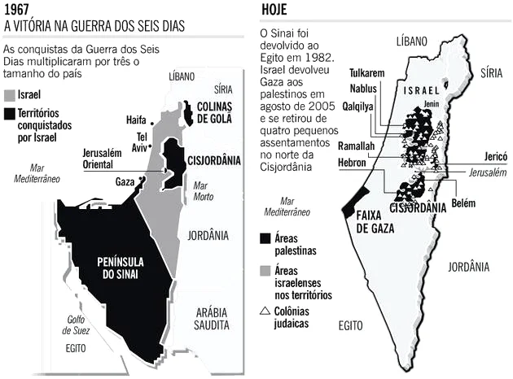
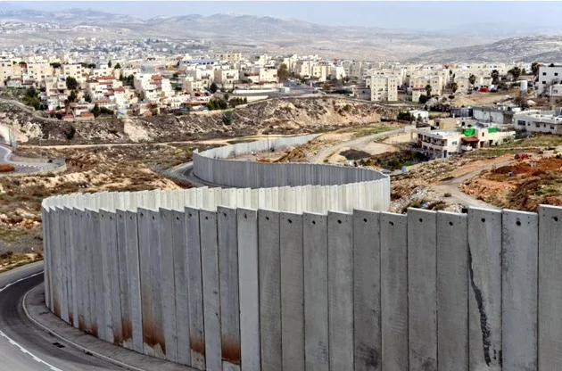

Palestina x Israel
Israel e Palestina
O conflito entre Israel e Palestina é uma disputa sobre a posse do território palestino e está no centro de debates políticos e diplomáticos atuais.
A disputa se acirrou no fim do século XX a partir de 1948 quando foi declarada a criação do Estado de Israel.

Origem do Conflito entre Israel e Palestina
A Palestina está localizada entre o Rio Jordão e o Mar Mediterrâeo, no Oriente Médio e até o início da Primeira Guerra Mundial, em 1914, estava sob o domínio do Império Otomano.
Com a dissolução deste império, a inglaterra passou a administrar a região em 1917. Calcula-se que até o fim de 1946, a Palestina era habitada por cerca de 1,2 milhão de árabes e 608 mil judeus.
Ao fim do conflito, os judeus iniciaram uma série de movimentos migratórios em uma tentativa de encontrar um novo lar após as perseguições ocorridas na Europa. Assim, a área passou a ser dominada por judeus a partir do fim da Segunda Guerra Mundial.
Para esse povo, a região é denominada "Terra Santa" e "Terra Prometida", mas o conceito de lugar sagrado é partilhado também pelos muçulmanos e cristãos.
O que diz a Bíblia?
As razões para estabelecer o estado judeu na região eram baseados em fontes bíblicas.
Os judeus consideram a área entre a áfrica e o Oriente Médio, onde está a Palestina, a terra prometida por Deus ao profeta Abraão.
Esta corresponde aos territórios hoje ocupados pelo Estado de Israel, Palestina, Cisjordânia, Jordânia Ocidental, sul da Síria e Sul do Líbano. Os chamados patriarcas bíblicos a receberam após o êxodo.
é essa a alegação dos judeus sionistas que reivindicam a ocupação integral do território. Antes da ocupação no pós-guerra, 4% da população da Palestina era formada por judeus.
O direito a partir da promessa bíblica é rejeitado pelos árabes e dizem que o filho de Abraão, Ismael, é seu antepassado. Desta maneira, a promessa de Deus os incluiria também. Além disso, a reivindicação dos palestinos é baseada no direito à ocupação, ocorrida por 13 séculos.
A Ocupação da Palestina
A região foi ocupada 2 mil anos a.C. por povos amoritas, cananeus e fenícios, sendo denominada como Terra de Canaã. A chegada de hebreus de origem semita ocorreu entre 1,8 mil a 1,5 mil a.C.
Sucessivas invasões marcaram a região. Em 538 a.C., o comandante da Pérsia, Ciro, o Grande, ocupou a região, retomada depois em uma invasão conduzida por Alexandre, o Grande, em 331 a.C. A invasão romana sob a liderança de Pompeu ocorreu em 64 a.C.
O domínio romano perdurou até 634 d.C. quando a conquista árabe marca o início de 13 séculos de permanência muçulmana na Palestina. Sob o domínio árabe, a Palestina foi alvo de diversas Cruzadas entre 1099 e 1291 e em 1517 começa a ocupação Otomana, que dura até 1917.
Após investidas da França, sob o comando de Napoleão Bonaparte (1769-1821), a Palestina passa ao domínio do Egito e a revolta árabe se inicia em 1834.
Somente em 1840, o tratado de Londres encerra o domínio egípcio na região e em 1880 começam as manifestações de autonomia árabe.
Em 1917, a Palestina é submetida ao mandato britânico. O comando inglês dura até fevereiro de 1947, quando a Inglaterra renuncia ao mandato sobre a Palestina e entrega a maior parte do equipamento bélico aos grupos sionistas.
Causas do Conflito entre Israel e Palestina
As causas para o conflito são remotas e se tivermos que colocar uma data, certamente seria a expulsão dos judeus pelos romanos no ano 70 d.C., quando os judeus tiveram que se deslocar para o norte da áfrica e a Europa, ato conhecido como Diáspora Judaica.
No século XIX, porém, na onda dos nacionalismos que surgia na Europa, alguns judeus se congregaram em torno das IDEIAS SIONISTAS do húngaro Theodor Herzl (1860-1904). Este defendia que o lar para os judeus deveria ser em "Sião" ou a terra de Israel, a Palestina e, finalmente, os judeus teriam um lar como os outros povos.
Ao término da Segunda Guerra Mundial (1945), os judeus sionistas passaram a pressionar a realização da criação do Estado Judeu.
Durante o conflito, 6 milhões de judeus foram exterminados em campos de concentração sob as ordens de Adolf Hitler (1889-1945). Assim, com apoio internacional, principalmente pela ação norte-americana, a região foi dividida em 1948-1949 em três partes: Estado de Israel, Cisjordânia e Faixa de Gaza.
A divisão, programada pela ONU (Organização das Nações Unidas), previa o repasse de 55% do território aos judeus e 44% permaneceria aos palestinos.
As CIDADES DE BELéM E JERUSALéM seriam consideradas território internacional devido ao significado religioso para muçulmanos, judeus e cristãos. No entanto, os representantes árabes não aceitaram as determinações.
Fundação do Estado de Israel
Em 14 de maio de 1948, contudo, foi fundado Israel, após a retirada dos ingleses. No dia seguinte, EGITO, SíRIA, JORDâNIA E IRAQUE INVADEM ISRAEL e deflagram a Guerra da Independência, que foi chamada de Nakba ou "catástrofe" pelos árabes.
A guerra terminou em 1949 e teve como resultado a expulsão de 750 mil palestinos que passaram a viver como refugiados em movimento conhecido como "êxodo de Nakba", dando origem ao Hamas.
Como resultado da expulsão dos palestinos, Israel aumentou o território em 50%. A extensão de terras foi indicada pela ONU e ocupam 78% da área destinada à Palestina.

A ação não foi questionada pela comunidade internacional. A reação só ocorreu em 1956 após Israel disputar com o Egito o controle sobre o Canal de Suez e ganhar o direito de exploração por determinação da ONU.
Em 1959 é fundada a OLP (Organização para a Libertação da Palestina), que só foi reconhecida pela ONU em 1974.
Guerra dos Seis Dias (1967)

Um novo conflito, contudo, desta vez em 1967, rende vitórias para Israel. Na chamada Guerra dos Seis Dias, Israel ocupa a Faixa de Gaza, a Península do Sinai, a Cisjordânia e as Colinas de Golã, na Síria.
Como resultado, meio milhão de palestinos fogem e o Conselho de Segurança da ONU aprova a Resolução 242. Ela torna inadmissível a aquisição de territórios pela força e o direito de todos os estados da região coexistirem pacificamente.
Os árabes tentam reaver o território ocupado em 1973, na Guerra de Yom Kippur (dia sagrado judeu), que durou de 6 a 26 de outubro. Porém, somente em 1979, Israel devolve ao Egito a Península do Sinai após a assinatura de um acordo de paz.
Conflito entre Israel e Palestina no século XXI
Longe do fim, o conflito ainda permanece e milhares de árabes ainda estão em campos de refugiados. A Autoridade Nacional Palestina reivindica a aprovação na ONU da autonomia do Estado Palestino.
Também exige a retirada dos assentamentos israelenses da Cisjordânia, situação que foi condenada pelo Tribunal Internacional de Haia, mas perdura.
Os palestinos exigem, ainda, que o futuro Estado Palestino tenha como marcas fronteiriças a estrutura anterior a 1967. Além disso, almejam o retorno de 10 milhões de refugiados para a região ocupada hoje por Israel.
Já o Estado de Israel pleiteia a totalidade de Jerusalém, reivindicação que não foi aceita pela Convenção de Haia.
Muro de Israel
Em campo, a vantagem bélica e econômica é israelense. Em 2002, o governo de Israel, sob o comando de Ariel Sharon (1928-2014) iniciou a construção de um muro na Cisjordânia.

A barreira, edificada sob a justificativa de proteger Israel dos ataques palestinos, separa as comunidades locais das áreas agricultáveis. Apesar das críticas internacionais, o projeto foi mantido.
Novos ataques foram iniciados em 2014 de Israel contra a Cisjordânia. Foi a mais violenta ofensiva desde 2005, quando ocorreu cessar-fogo após a promessa da retirada das colônias judaicas dos territórios palestinos.
Em 53 dias de conflito, no verão de 2014, foram mortos 2,2 mil palestinos. Deles, 1,5 mil eram civis e 538, menores de idade, conforme dados da OCHA (Escritório das Nações Unidas para a Coordenação de Assuntos Humanitários nos Territórios Palestinos Ocupados). Do lado israelense, a contenda resultou em 71 mortes, seis delas de civis.
Referências
https://www.todamateria.com.br/conflito-israel-palestina/
https://www.brasilparalelo.coConflito Israel e Palestina - Toda Matériam.br/artigos/conflito-entre-israel-e-palestina
https://mundoeducacao.uol.com.br/geografia/o-conflito-entre-israel-palestina.htm
https://guiadoestudante.abril.com.br/estudo/israel-e-palestina-entenda-a-origem-do-conflito/